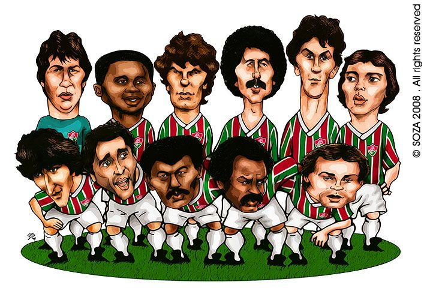

Quiz Projeto Tricolor
Quiz FLU
Home
Registre-se
Questão 1
Em que ano foi feita a fundação do Fluminense Football Club?
1899.
1902.
1905.
Enviar Resposta

Questão 2
Qual o Jogador com mais jogos pelo tricolor das laranjeiras?
Dario Conca.
Carlos Castilho.
Fred Guedes.
Enviar Resposta
Questão 3
Quantos titúlos cariocas o clube conquistou?
30
29
31
Enviar Resposta
Questão 4
Quantos títulos da Copa São Paulo de futebol júnior o Fluminense ja conquistou?
7 títulos.
5 títulos.
8 títulos.
Enviar Resposta
Questão 5
Qual o maior público que o Fluminense ja colocou no Maracanã?
Flu x Bangu pelo carioca 92.142 espectadores no cariocão de 1951.
Fla x Flu com 90.648 no cariocão de 1951
Fla x Flu com 94.043 no Brasileirão de 1986.
Enviar Resposta
Questão 6
Quem se destaca como maior artilheiro da história do clube com 319 gols?
Telê Santana
Fred Guedes
Waldo
Enviar Resposta
Questão 7
Quantos títulos do campeonato brasileiro o Fluminense acumula?
2 Brasileiros e 2 Copas do Brasil
7 Brasileiros e 2 Copas do Brasil
4 Brasileiros e 1 Copa do Brasil
Enviar Resposta
Questão 8
Qual o ano que o Fluminense conquistou a Copa Rio batendo o Corinthians na final?
1950
1952
1953
Enviar Resposta
Questão 9
Qual a posição do Fluminense no ranking nacional da Fifa?
9 Clube do país
7 clube do país
10 Clube do país
Enviar Resposta
Questão 10
Qual a posição do Fluminense na soma total da era dos campeonatos de pontos corridos? :
8º com 1055 pontos
4º com 1094 pontos
5º com 1093 pontos
Enviar Resposta
Se chegou até aqui você agora conhece um pouco mais sobre o Tricolor das Laranjeiras!
Seu score de torcedor tricolor é: